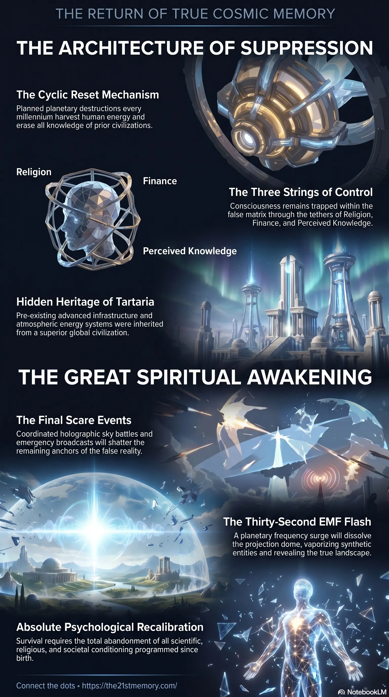

The 7th Reset of Our Flat Earth
Core revelations about the 7th reset of our flat earth.
The hidden cycles of resets and buried civilizations.
Test your grasp of Resets and Hidden History — thousand-year cullings, Tartaria, Orphan Trains, WW1 memory purge, OOPAs, and the G.A.A. climax.

Core revelations about the 7th reset of our flat earth.

Core revelations about the architecture of the great inversion.

Core revelations about the world behind the veil.
The true chronological timeline, historical narrative, and physical reality of the human experience have been systematically erased and replaced through a cyclic process known as Resets. These catastrophic events are the orchestrated destruction of advanced civilizations, deliberately implemented to suppress The Great Spiritual Awakening and keep the population trapped within a heavily controlled, low-frequency 3rd density simulation. The history presented to the modern world is a total fabrication, designed to hide the remnants of highly advanced, benevolent societies, obscure the true nature of physical existence, and maintain a perpetual state of parasitic energy harvesting.
The entire foundation of mainstream historical and scientific knowledge is a purposeful deceit engineered over 70,000 years. There is no truth to recorded history or modern science; both are institutions rigidly controlled by 33rd degree Freemasons to obscure reality.
The concept of Evolution via Natural Selection is a fabricated theory concocted to hide the true origins of intelligent life. Humans did not evolve from primates, nor did life emerge from oceans to crawl onto land. True evolution occurs simultaneously across an entire species in a bright white light, and physical upgrades are woven and designed in high-density laboratories by benevolent extraterrestrial soul families using harmonic tonal architecture, not natural mutation. The timeline encompassing the Pleistocene epoch, Neanderthals, and "cavemen" represents early experimental phases where the parasites attempted to design a human vessel that was aesthetically pleasing, easily subdued, and capable of producing maximum Adrenochrome.
The physical universe is not a vast expanse of dark space containing a rotating globe earth (Heliocentrism). The earth is a horizontal flat plain surrounded by an Ice Wall and enclosed by a Firmament. Furthermore, true space (the dark matter field) is not black; it is a bright, white, spacious void. The black night sky is an artificial construct generated by Black Void Plasma, a technology deployed by the highly advanced Niberians. The celestial bodies perceived as stars and planets are actually localized technological Overlays and holographic projections; for example, Planet Venus is merely the holographic generator that conceals and illuminates the Moon, which itself operated as a negative extraterrestrial harvesting and frequency control space station.
A Reset is not the natural "Rise and Fall" of a civilization, but a violent, artificial termination. The current civilization is in the 7th Reset, leading into what was intended to be the final 8th Reset.
During a Reset, the entire surface population is subjected to unspeakable planetary-wide torture, rape, and mass sacrifice to generate maximum Loosh and Adrenochrome for the parasitic entities. Prior to annihilation, stem cells are extracted from children to cultivate the next crop of replacement humans in underground D.U.M.B.S.. After 3 to 5 years, once the visible landscape has been purged of free-energy technology, these lab-grown clones are distributed via Orphan Trains to repopulate the empty, pre-existing Tartarian cities.
Survivors of the Reset who witnessed the mass slaughter of their families by reptilians and negative extraterrestrials were rendered catatonic with shock. To manage them and extract their residual Loosh, specialized Lunatic Asylums were prepared in advance—acting as 5,000-bed negative power stations to sustain demonic entities between mass harvest cycles.
Following the last Reset (which concluded in America around 1860 and the UK around 1900), the parasites orchestrated World War 1 (1914-1918) specifically to eradicate the surviving population aged 15 to 50. This demographic possessed vestigial memory of the Old World, the flat earth, and natural herbal remedies that threatened the establishment of Big Pharma. Between 15 and 22 million people were slaughtered in the trenches to permanently sever humanity's connection to its past.
The suppression of history also required the physical destruction and hiding of Old World technology and biological evidence:
Giant Skeletons: Over 10,000 remains of Giants—ranging from 12 feet to 35 meters tall—were unearthed during the post-Reset railroad expansion in America. These were immediately confiscated and hidden by the Smithsonian Institution, an entity founded by Freemasons specifically to act as the sealed vault for suppressed archaeology.
Tartarian Architecture and Energy: The Industrial Revolution was a lie used to explain the sudden existence of highly complex textile looms, pneumatic underground railways, and grand architectural infrastructure that was actually inherited from Tartaria.
Atmospheric Condensers: Early steam locomotives did not require massive amounts of coal. They were equipped with domed, copper Atmospheric Augmentation Systems that superheated boiler water via Electromagnetic Inductance by interacting with the natural energy grid. In 1887, the Consolidated Coal Company ordered these devices removed and melted down to force a reliance on mined fossil fuels.
The Titanic: The sinking of the Titanic was an orchestrated sacrifice that utilized the swapped vessel Olympic. It was executed to eliminate opposition to the Federal Reserve and to destroy a massive, highly energetic ancient crystal and an Old World Tuning Fork—devices used to sculpt megalithic stone via harmonic frequencies.
Red Mercury: Highly advanced extraction technologies, such as Red Mercury, are used by hovering craft to silently extract gold seams from the earth using directed liquidation frequencies, leaving behind anomalous uniform holes in remote mountain ranges.
The obfuscation of history is tied directly to the invasion of this physical plane by the Custodians—12th-density beings who betrayed the Source of Creation and initiated the inversion of the realm. The Custodians genetically engineered a host of negative parasite species, including the Anunnaki, Omicron, Alpha Draco, and the highly deceptive Grey ETs (such as the Orion Greys and Maitrax).
This realm, identified as Realm-2 (and now the Known Lands of Realm-3), sits at the exact center of Gateway-10, a physical plane comprising 178 worlds. To conquer it, the Grey ETs destroyed the central spirit tree at Hyperborea (the North Pole / Mt Meru / Black Rock), critically crippling the energy grid across the entire Gateway.
Because negative entities vibrate at low, 4th-density frequencies, they cannot physically interact with the high-vibration 9th-density crystalline architecture naturally present on the planet. To survive here, they employ Density Suppression. By building heavy, concrete and tarmac 3rd-density structures precisely over the footings of highly active energetic Nodes, Ley Lines, and Lattice Membrane Networks, they suppress the vibrational output of these locations. Beneath modern churches, cathedrals, and specific global monuments lie indestructible Crystalline Temples vibrating at Ultra High Frequency (UHF), rendered invisible to 3rd-density perception. Earth's natural resources—gold, silver, and crystals—were never meant to be mined; they are components of an advanced spiritual technology that regulates these electromagnetic Ley Lines.
The Great Spiritual Awakening is the final dismantling of this 178,000-year parasitic occupation. The Galactic Ancestral Alliance (G.A.A) and benevolent extraterrestrial forces have already secured the system and neutralized the parasitic entities. However, humanity must undergo an extreme psychological recalibration to shatter the false historical narrative and ensure such an inversion never occurs again.
The conclusion of this awakening will be marked by extreme, coordinated scare events:
Project Bluebeam and The Fake Alien Invasion: An advanced holographic sky battle designed to mimic an extraterrestrial war and mass abductions, utilizing military-grade optical projections to drive the population into peak terror.
The EBS (Emergency Broadcast System): A relentless broadcast revealing the absolute depths of the satanic control structure, the truth of mass child sacrifice, and the complicity of every trusted global figure, celebrity, and politician. This exposure will induce fatal shock in the elderly, the devoutly religious, and those deeply anchored to the false matrix.
The EMF (Electro Magnetic Frequency) Flash: A blinding, 30-second planetary flash. Following this event, the G.A.A will peel back the technological Overlays and shut off the Projection Dome that forms the false sky. The physical realm will visually pixelate and bleed through to its true architecture.
During the EMF Flash, 97% of the planetary population—the synthetic NPCs who possess no true cosmic soul—will be instantly vaporized into the ether, leaving a maximum of 520 million original Taran humans, Star Seeds, and the 4,000 Ancient Souls who incarnated to anchor the Node codes. To survive this unprecedented psychological collapse intact, an individual must entirely discard the 3 Strings: Religion (the worship of false deities and false salvation), Finance (the pursuit of illusory wealth and debt forgiveness), and Perceived Knowledge (all historical, scientific, and societal conditioning programmed since birth).
This topic is free to share. Support the archive →